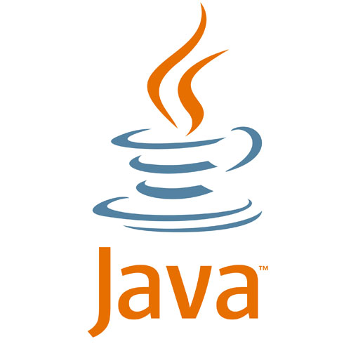
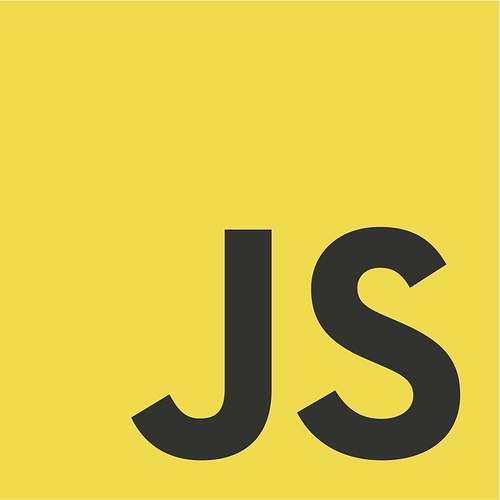
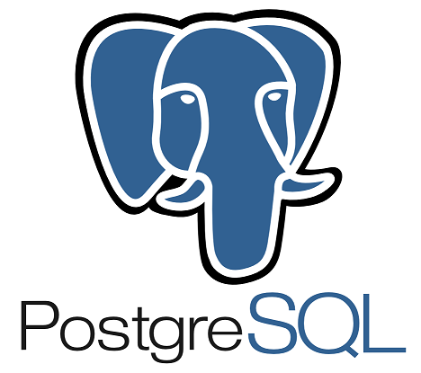
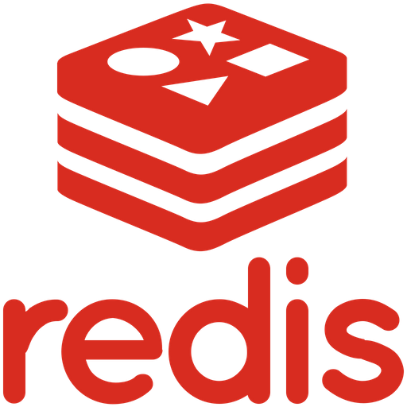
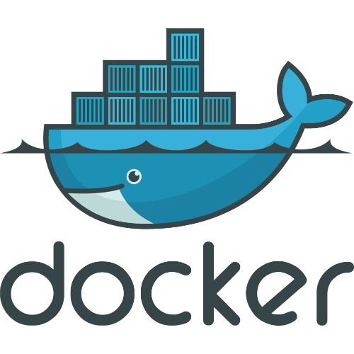

Conhecimentos











O Onto2Ae é um sistema desktop de apoio ao diagnóstico médico de doenças oriundas do Aedes Aegypti, mais especificamente Dengue, Zika e Chikungunya. Para esse projeto foi desenvolvida uma ontologia com todos os sintomas e com quais dessas doenças eles estariam ligados. A partir dos sintomas indicados pelo médico, ela inferia as probablidades do paciente estar com cada uma das doenças.
O projeto foi desenvolvido em Java e as telas desenvolvidas em JavaFX. Minha participação foi integrar os sintomas obtidos nas telas com a ontologia e calcular as porcentagens a partir da inferência ontológica.
O Sistema de Monitoramento de Atividades de Telessaúde (SMART) é um sistema cuja função é apanhar, avaliar e monitorar as atividades de Telessaúde no Brasil.
Minha participação no projeto foi o início da conversão do sistema de Python/Django para PHP/Laravel.
A Central de Atendimento e Despacho do Rio Grande do Norte é um sistema de gerenciamento de ocorrências para as agências de segurança pública, desde sua criação via solicitação da população, ao seu despacho, atendimento e finalização.
O sistema ainda está em fase de implantação no Centro Integrado de Operações de Segurança Pública; e seu desenvolvimento está sendo feito com Java/Spring Framework,
banco de dados Postgres no back-end e React no front-end.
Nesse projeto eu trabalhei ativamente no desenvolvimento do back-end, desde o início do projeto. Assim,
minhas contribuições vão desde a modelagem inicial do sistema, até a execução dos casos de uso do sistema.
A MONALISA é uma plataforma de monitoria online que permite a contribuição e compartilhamento entre alunos universitários sobre assuntos vistos em componentes curriculares; permitindo ao aluno tanto expôr sua dúvida, quanto ajudar a outros alunos na resolução de suas dúvidas.
Essa plataforma está sendo desenvolvida como projeto final da disciplina de Padrões de Projetos com as tecnologias Java/Spring Framework e banco de dados Postgres no back-end e Thymeleaf no front-end.
A plataforma uTravel é uma plataforma de planejamento e compartilhamento de viagens. A ideia geral é oferecer aos usuários uma forma dinâmica de anotar o andamento da viagem, desde a concepção inicial do momento em que foi decidido que a viagem seria feita, até o momento final; funcionando, ademais, como uma rede social de viagens com a qual seus usuários podem se inspirar nas experiências de outras pessoas, compartilhar informações e as suas próprias experiências.
A plataforma está sendo desenvolvida em JavaEE com banco de dados MySQL no back-end e
AngulasJS no front-end.
Minha participação no projeto está centrada no desenvolvimento do back-end.
Atuo como desenvolvedora back-end, construindo soluções no contexto de cidades inteligentes e campus inteligentes, principalmente na área de segurança. As aplicações são orientadas a API RestFull e desenvolvidas utilizando linguagem Java, Spring Framework e banco de dados Postgres.
Atuei como desenvolvedora back-end e front-end, trabalhando em soluções voltadas para a saúde, principalmente na promoção ou gerenciamento de serviços de Telessaúde no Brasil, com parceria direta com o Ministério da Saúde. O projeto em que participei mais ativamente utilizava como tecnologias a linguagem Python com framework Django e a linguagem PHP com framework Laravel; além de banco de dados Postgres.
Atuei como monitora da disciplina de Banco de Dados durante o andamento do curso técnico. Minha participação indicava como funções principais (i) a tutoria e ajuda aos alunos com dificuldades na disciplina; (ii) a elaboração de materias de aulas, testes e provas; além do (iii) acompanhamento dos trabalhos desenvolvidos pelos alunos da disciplina.
Curso nível técnico em Informática integrado com ensino médio. Durante o curso, tivemos contato com quase todas as áreas envolvidadas na informática; sendo tais: Programação, Banco de dados, Desenvolvimento WEB, Redes, Sistemas Operacionais, Eletrônica e Manutenção de Computadores, além de disciplinas de empreendedorismo.
Me chamo Maria Rayane, tenho 21 anos de idade e sou bacharelanda no curso de Tecnologia da Informação na Univerdade Federal do Rio Grande do Norte (UFRN), com previsão de conclusão em dezembro de 2020. Minha história na informática iniciou-se no IFRN. Logo de início, identifiquei o quão interessante poderia ser a resolução de problemas utilizando ferramentas computacionais e o quanto isso pode impactar diretamente na vida cotidiana das pessoas. Ainda no curso técnico, desenvolvi uma aplicação com conceitos ontológicos cuja proposta era auxiliar os médicos com o pré diagnóstico de doenças oriundas do mosquito Aedes Aegypti. Nas minhas esperências como desenvolvedora, observei o quanto a tecnologia conseguia melhorar a qualidade de vida das pessoas em vários quesitos; desde promoção a saúde de qualidade, até um serviço de segurança mais eficiente. Desde então, alimentei em mim mesma a vontade de fazer softwares para as pessoas, que, no final, são o que importam. Gosto bastante de solucionar problema em qualquer escala. Dessa forma, para atender o que está sendo requirido, estou aberta a aprender novas ferramentas de desenvolvimento, linguagens e/ou paradigmas de programação, etc.